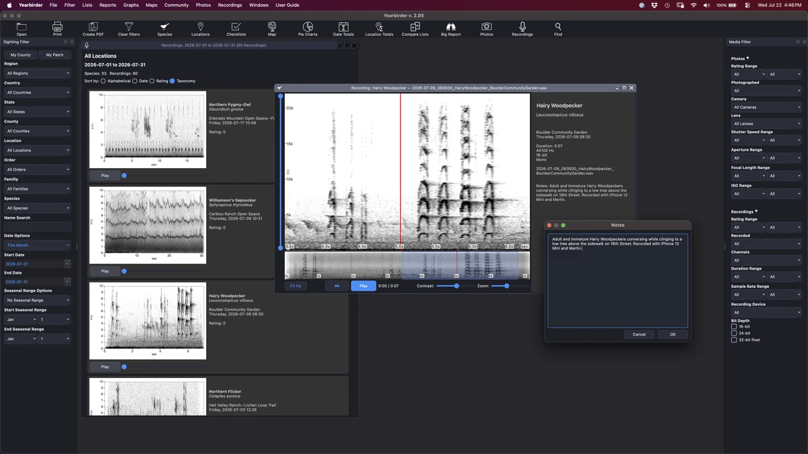
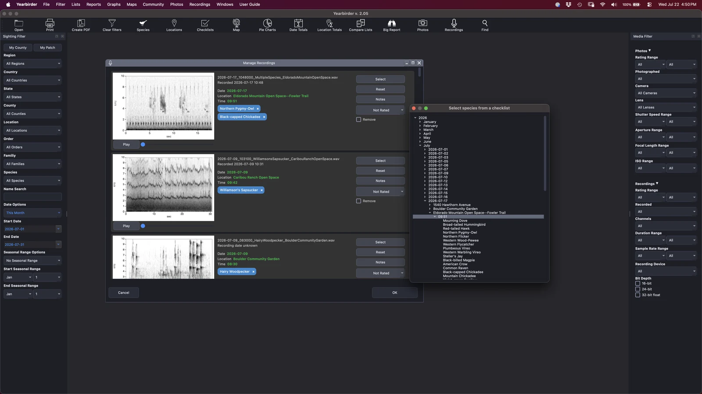
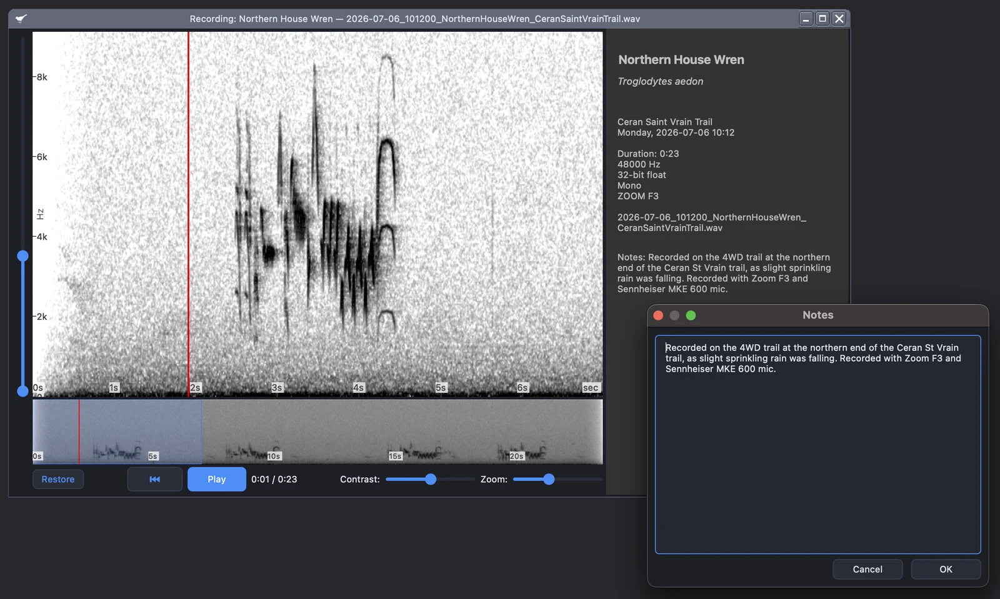
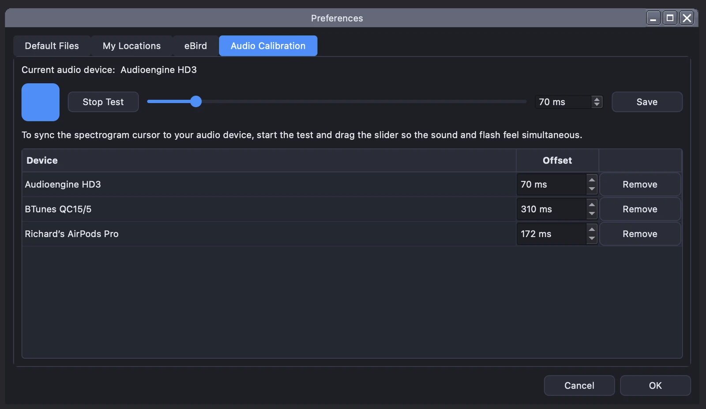
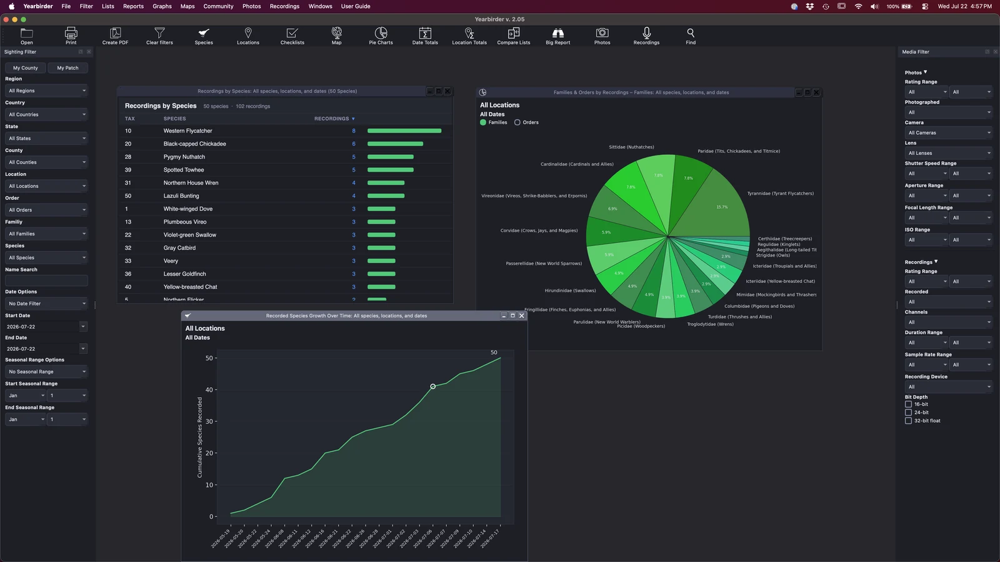

If you record bird sound, Yearbirder brings your WAV files into the same catalog as your sightings and photos. See each recording as a spectrogram, play it back with a synchronized cursor, and filter your library by species, region, date, and the audio properties that matter to a recordist.

Browse your recordings as spectrogram cards, each with playback and a scrubber.
Add your WAV recordings and Yearbirder reads their embedded date and time — including the timestamp your recorder writes into the file — to suggest the matching checklist and species. When a recording captures more than one bird, you can assign it to several species at once, and it appears under each.

Open any recording in an enlargement view with a full spectrogram you can customize by zooming both the kHz and the time, and adjusting the contrast. Play it back and a cursor tracks the sound in real time, so you can follow a song note by note. Rate each recording and add notes to build a library you can search and sort.

Different audio hardware introduces different amounts of latency between what you hear and where the cursor sits. Yearbirder's per-device audio calibration lets you align the two once, so the cursor stays true to the sound on your setup — headphones, interface, or built-in output.

Your recordings feed the same charts and maps as the rest of your data. Track how many species you've recorded and your year-to-date pace, plot your recordings on an interactive map, and play them back in sequence to follow your recording travels over time.

Beyond species, region, date, and season, Yearbirder lets you filter your recordings by their audio properties — so you can find exactly the cuts you're after.